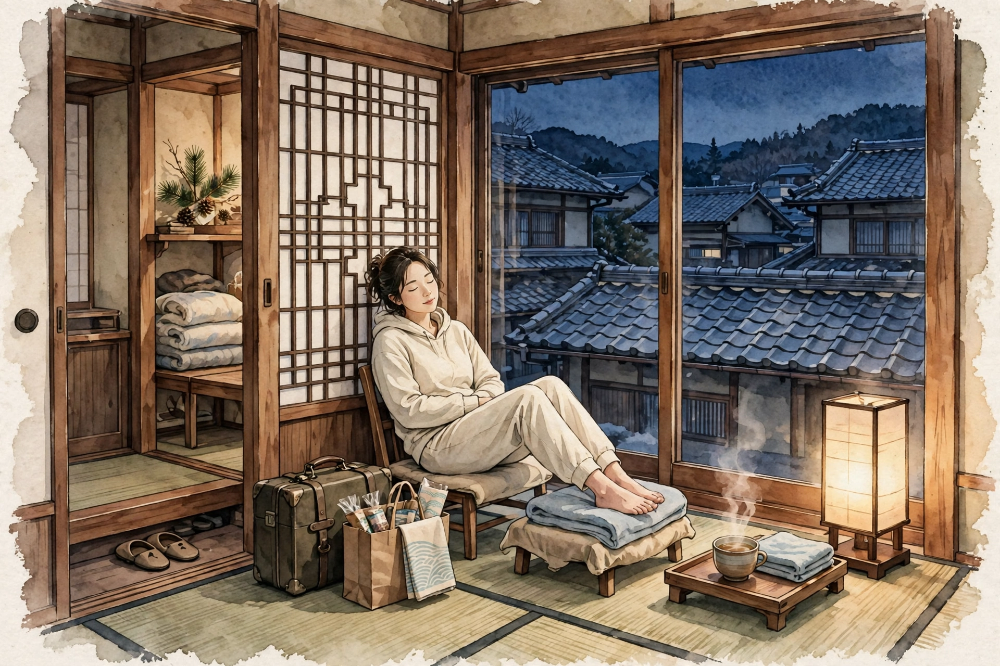

京都で年末年始の帰省・移動の後に気になる脚のむくみ感｜過ごし方とセルフケア、受診の目安

新幹線や高速バス、車に長く揺られて京都へ戻ってきた日、あるいは実家から帰ってきた夜——。靴を脱ぐときに靴がきつく感じる、ふくらはぎが張って重だるい、足首まわりがすっきりしない——。 普段は気にならない脚のむくみ感が、年末年始の帰省・移動の後に目立ってくる、という方は少なくありません。 この記事では、帰省・移動の後に感じる脚のむくみ感について、一般的な解説と、長い座り姿勢や荷物の運搬、実家での過ごし方や寒さなど考えられる要因の整理、移動中と到着後に取り入れられるセルフケア、受診の目安をまとめました。 なお、観光や街歩きで歩いた後に感じる脚のむくみ感を取り上げた歩いた後の脚のむくみ感の記事、同じく歩いた後の足裏やふくらはぎの疲れを取り上げた歩いた後の足の疲れの記事とは場面を分け、ここでは「年末年始の帰省・移動という場面と、脚のむくみ感」に焦点を当ててご紹介します。移動中の座りっぱなしと重なりやすい腰まわりについては、座りっぱなしの後に気になる腰の重さの記事もあわせてご覧ください。
帰省・移動の後に感じる脚の「むくみ感」とは
「脚がむくむ」という感覚は、ふくらはぎや足首まわり、足の甲などに感じる張り感・重だるさ・靴のきつさなどをまとめて表す、一般的な表現です。 それ自体が病名というわけではなく、感じ方も人それぞれで、移動を終えた日の夕方だけ気になる方もいれば、翌朝まで残るように感じる方もいます。
帰省・移動の日は、乗り物の中で座ったまま過ごす時間が長くなりがちです。座った姿勢が続くとふくらはぎを動かす機会が減り、下半身の水分が重力の影響を受けやすい状態が続きます。 まずは「どこが・どんな移動の後に・左右で違いがあるか・休むとどう感じるか」を振り返ってみることが、ケアの出発点になります。 とくに、片脚だけに目立つ場合や、痛みや赤みをともなう場合は、セルフケアで様子を見る前に、後述の受診の目安もあわせてご確認ください。
帰省・移動の後の脚のむくみ感に考えられる要因
帰省・移動の後に脚が気になるとき、その背景には一つの原因ではなく、移動の日の過ごし方が重なっていることがあります。一般に、要因として次のようなものが挙げられます。いずれも断定ではなく、ご自身の過ごし方を振り返るための整理としてご覧ください。
- 乗り物での長い座り姿勢：新幹線や高速バス、飛行機、車など、座ったまま数時間過ごす移動では、ふくらはぎを動かす機会が少なくなり、下半身の水分が下のほうに集まりやすい姿勢が続きます
- 乗り換えや駅での歩行と立ち止まり：大きな駅での乗り換えや、混雑の中での移動、ホームでの待ち時間など、歩く時間と立ち止まる時間が不規則に重なる日があります
- 荷物の運搬：スーツケースやお土産の入った重い荷物を引いたり持ったりする時間が長くなると、脚や体全体の使い方に偏りが出ることがあります
- 実家での過ごし方：帰省先では、こたつや低い座布団に長く座る、台所に立って料理や片付けを手伝う、親戚へのあいさつ回りで歩くなど、普段と違う姿勢や動きが重なりやすい時期です
- 食事や水分のタイミングの変化：移動中は水分補給が後回しになりがちで、帰省先ではごちそうやお酒の機会も増えます。普段の食事や水分のパターンと変わることが、夕方の脚の感じ方と重なる方もいます
- 寒さと室内外の温度差：年末年始は冷え込む日が多く、乗り物や駅、実家の室内との温度差も大きくなります。足元が冷気にさらされる時間が長くなる日があります
- 靴や服装：移動の日に履くブーツや締め付けの強い靴下、慣れない靴などが、足や足首まわりに負担をかけることがあります
- 睡眠や生活リズムの乱れ：早朝の出発や夜遅い到着、帰省先での就寝時間のずれが重なると、前日の脚の重だるさを持ち越したまま朝を迎えやすくなります
東洋医学では、脚のむくみ感は「脾」や「腎」の働きと関係づけて考えられ、脚を巡る経絡とも関わるとされます。 当サロンのお悩み別ガイドでも「むくみ・脚のだるさ」として、施術でのアプローチをご紹介していますので、あわせてご覧ください。
移動中と到着後に取り入れられるセルフケア
帰省・移動の日や、到着した日の夜に取り入れやすい対処をまとめました。痛みが強いときは無理をせず、痛みのない範囲で行ってください。
- 座席で足首を小さく動かす：乗り物の中では、足首をゆっくり回す、つま先を手前と奥へ小さく動かすなど、席を立たなくてもできる動きを合間にはさんでみてください
- 休憩や乗り換えの合間に歩く・立つ：サービスエリアや駅での休憩では、少し歩く、立って脚を伸ばすなど、座りっぱなしを区切る時間を作ってみてください
- 水分をこまめにとる：移動中はトイレを気にして水分を控えがちです。飲める範囲でこまめに水分をとるようにしてみてください
- 到着後は脚を少し高くして休む：帰宅後や実家に着いた後は、クッションなどにふくらはぎをのせ、無理のない姿勢で休む時間をつくってみてください
- 脚を温める：到着した日の夜は、熱すぎない温度の湯船にゆっくりつかる、温めたタオルを足首まわりに当てるなど、冷えやすい足元を温める時間をとってみてください
- 靴と靴下を見直す：移動の日は履き慣れた靴を選び、締め付けが強く感じる靴下やブーツは避けるなど、その日の装いを振り返ってみてください
- 荷物は分ける・台車やキャリーを使う：重い荷物は宅配で送る、キャリーバッグや台車を使うなど、脚や体に寄る負担を分散してみてください
- 横になって休む時間と睡眠をとる：移動の日は体力も使っています。到着した日の夜に予定を詰め込まず、横になって休む時間や睡眠を優先することも大切です
- 強いマッサージや無理なストレッチは避ける：痛みが出たり、あざができたりするような強い刺激は中止し、様子を見てください
年末年始の京都は、初詣や帰省の人出で駅や寺社のまわりもにぎわいます。 移動の前後にお出かけの予定がある場合は、歩く距離や立ち寄る場所の順番をあらかじめ見直しておくことも、負担を重ねないための工夫になります。
こんなときは医療機関へ
帰省・移動の後のむくみ感の多くはその日の負担と関係しますが、中には医療機関での確認が必要な場合もあります。とくに長い移動の後は、次のような場合は、内科や血管外科など医療機関への受診をご検討ください。息苦しさや胸の痛みをともなうときは、ためらわずに早めに相談してください。
- 片脚だけが急に腫れる、両脚の太さに明らかな違いがある
- 強い痛みや、赤み・熱っぽさをともなう
- 息苦しさや胸の痛みをともなう
- 数日たっても続く、繰り返す、少しずつ目立つようになってきた
- 発熱をともなう、けがのあとから腫れてきた
- 尿の様子に変化がある、短い期間で体重が大きく変わったと感じる
当サロンは医療機関ではなく、施術はリラクゼーションと美容を目的としたものです。診断や治療は行いませんので、 気になる症状がある場合はまず医療機関へご相談ください。
サロンのご案内 — ステラアルタイル（京都）
ステラアルタイルは、京都市内の女性専用プライベートサロンです（阪急京都河原町駅・京阪祇園四条駅からご利用いただけます。詳しい住所は予約確定後にご案内します）。 オイルマッサージと美容整体を組み合わせ、背中・脚・腕・頭まわりまで全身の巡りをたどるように丁寧にケアし、脚まわりのケアも含みます。施術の前には、その日の体の状態についてカウンセリングを行い、力加減を調整しながら進めます。日々の体の使い方や休み方についてもお伝えします。 夕方からの営業ですので、お仕事帰りにもご利用いただけます。
基本コースは90分10,000円（税込）の1コースです。月〜土17:00〜22:00（日曜休み）、完全予約制です。 現在は開院準備中で、予約の受付はまだ開始していません。